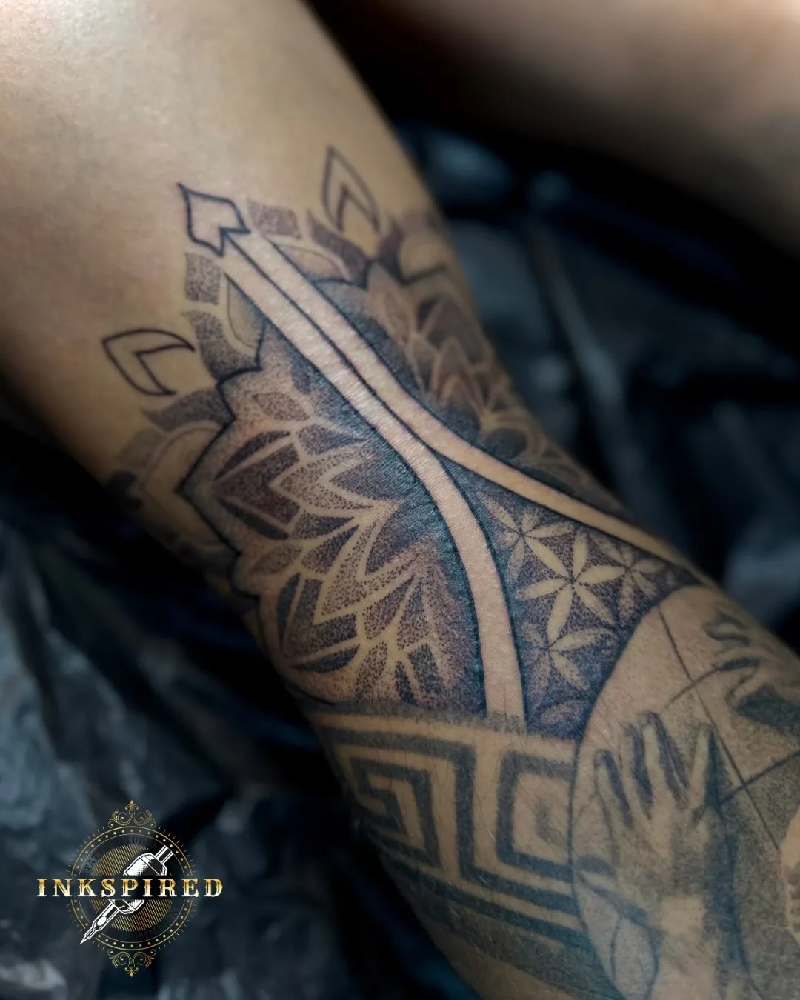
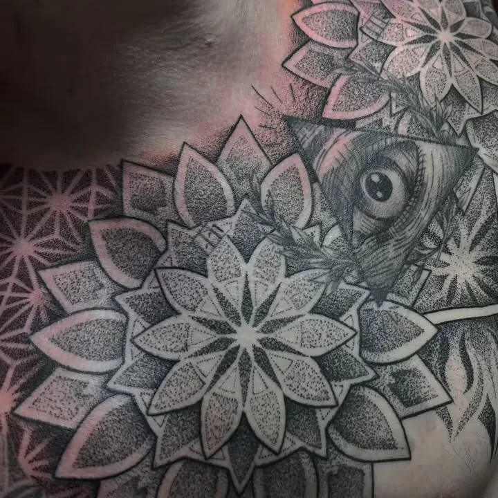
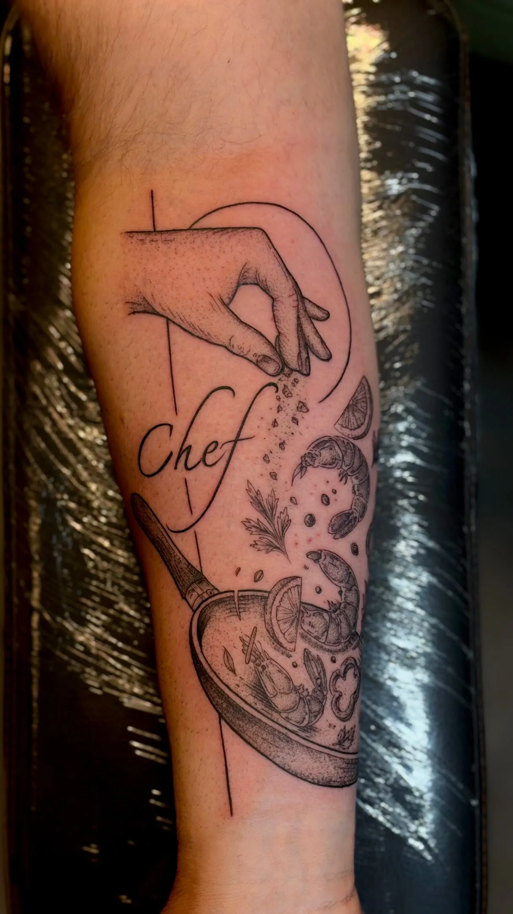
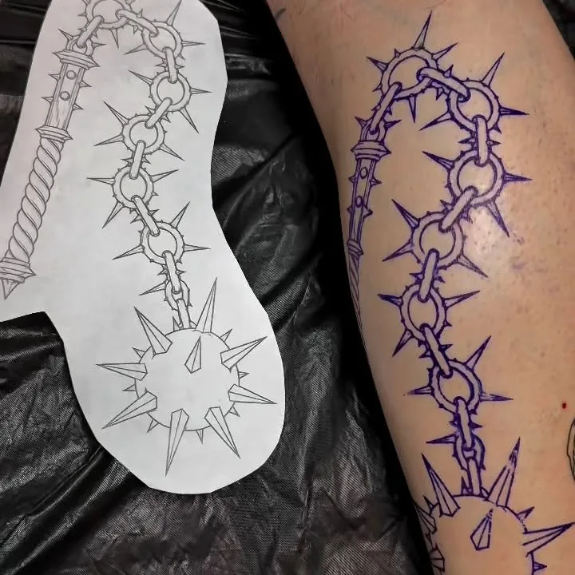
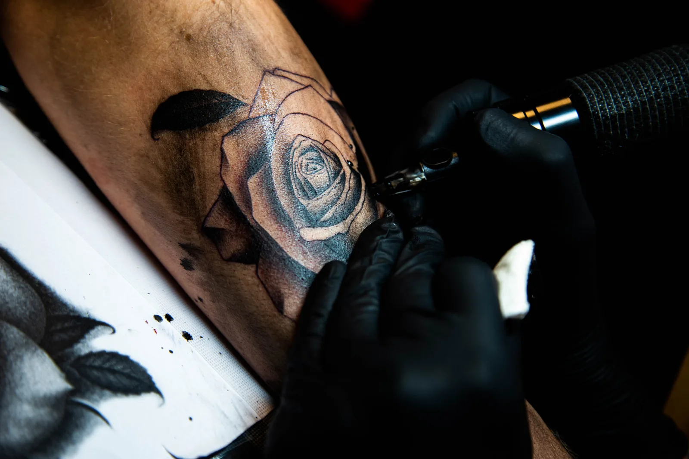
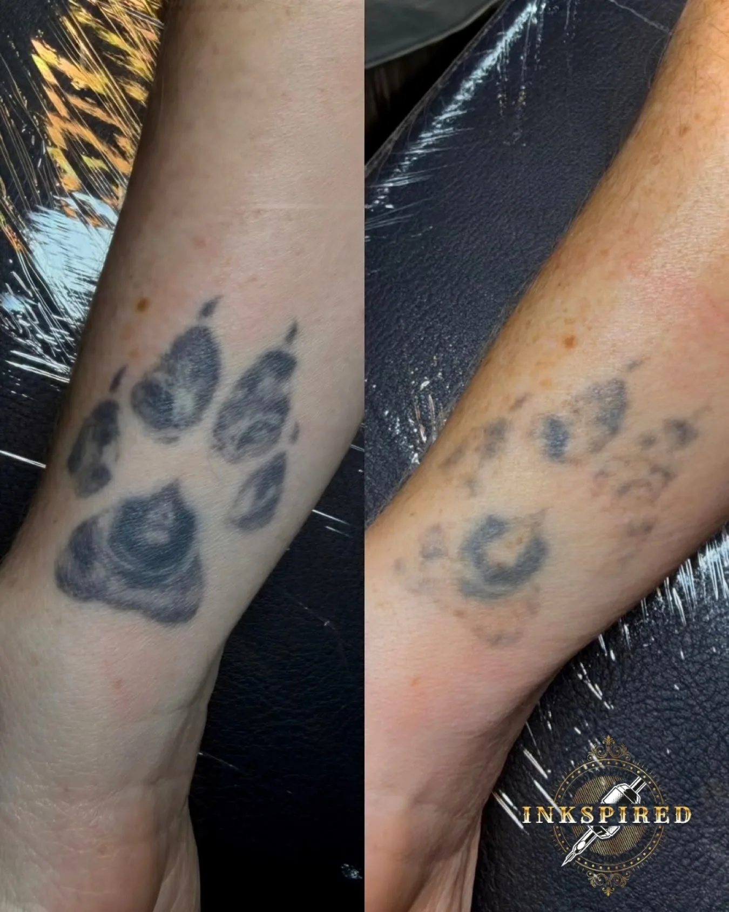
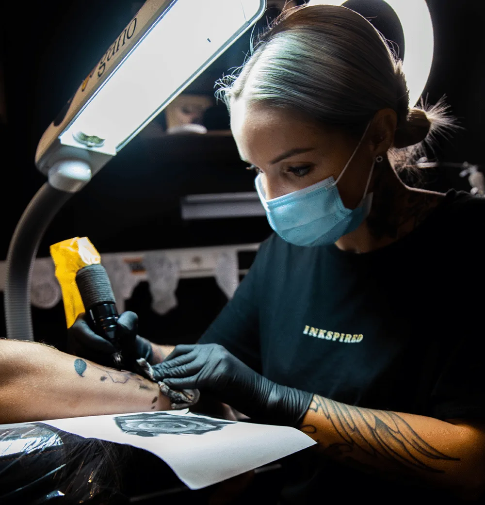
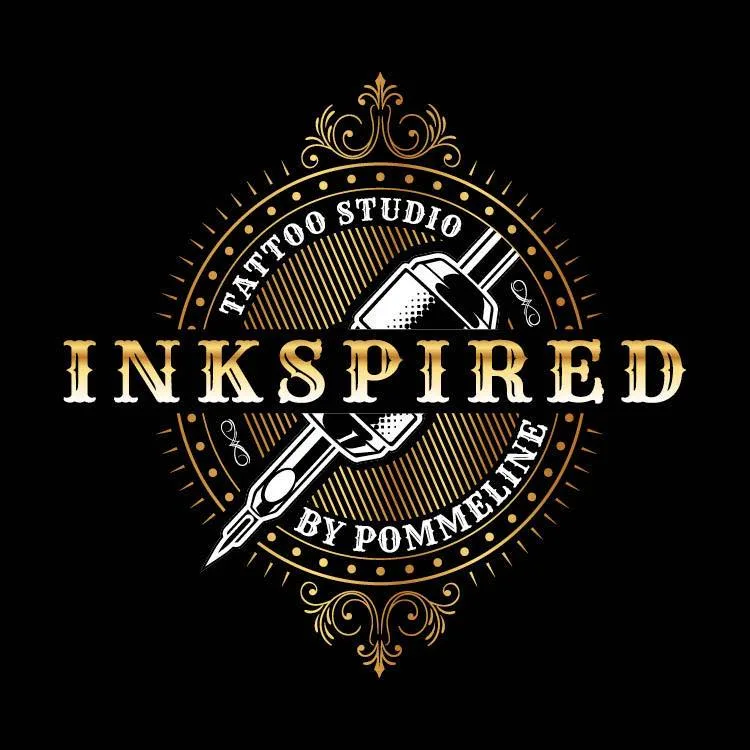

Symmetrie vraagt geduld.
Elk ontwerp teken ik zelf, voor de plek waar het moet komen. Een mandala op de borst loopt anders dan een band rond je onderarm. Daar neem ik mijn tijd voor, nog voor er een naald aan te pas komt.





Wat ik graag zet
Twijfel je of jouw idee bij mij past? Stuur het gewoon door. Af en toe werkt er ook een gastartiest met een eigen stijl in de studio.
- I
- Geometrie en dotworkStrakke lijnen en schaduw die ik punt per punt opbouw. Zo krijg je die zachte, korrelige overgang.
- II
- Mandala'sIk bouw ze op vanuit het midden, zodat ze mooi meelopen met je borst, schouder of rug.
- III
- FinelineVoor kleinere dingen met een verhaal. Een woord, een handschrift, een vingerafdruk van je papa.
- IV
- Cover-upsEen oude tattoo die je niet meer ziet zitten? Soms werk ik er iets nieuws over, soms maak ik hem eerst lichter met de laser.

Spijt van een tattoo? Daar is de laser voor.
Met de PicoLuma-laser breek ik de inkt in heel kleine deeltjes. Je lichaam ruimt die daarna zelf op, beetje bij beetje. Daarom werken we in een paar sessies, in dezelfde rustige studio waar ik ook tattoo.
- Toestel
- PicoLuma Pico-laser
- Wat kan
- Een tattoo helemaal weg, of lichter maken voor een cover-up
- Sessies
- Meerdere, met tijd ertussen om je huid te laten werken
- Resultaat
- Hoeveel er na één keer verdwijnt, verschilt van persoon tot persoon
Van eerste berichtje tot genezen huid.
Alles gebeurt op afspraak. Zo heb ik alle tijd voor jou, en zit er niemand te wachten terwijl we bezig zijn.
- Stap 1
Je stuurt je idee
Wat wil je, waar moet het komen, hoe groot ongeveer en in kleur of zwart. Een foto of een krabbel helpt al veel.
- Stap 2
Ik teken het uit
Op maat van jouw lichaam. We bekijken het samen en ik pas aan tot het voor jou klopt.
- Stap 3
De sessie
Ik leg uit wat ik doe, we babbelen wat en jij zit op je gemak. Hygiëne komt altijd eerst.
- Stap 4
Nazorg
Je krijgt alle uitleg mee naar huis. Binnen de drie maanden kom je gratis terug voor een eerste bijwerking.
Leeftijd. Je moet 18 zijn. Ben je 16 of 17, dan kan het met toestemming van je ouders.
Cadeaubon. Een tattoo cadeau doen kan ook. Je krijgt de bon digitaal of op papier.


Veel mensen komen voor hun eerste tattoo.
En dat vind ik net fijn. Ik neem de tijd om alles uit te leggen, zodat je weet wat er gebeurt en je je niet hoeft op te jagen. Mijn studio is privé, dus er loopt niemand binnen en buiten terwijl we werken.
"Het waren mijn eerste tattoos en ik werd door haar enorm op mijn gemak gesteld."
Laure Van Roij★★★★★"Van het maken van de afspraak tot de laatste lijn is alles heel professioneel en vlot verlopen! Een mooi ingerichte zaak, met een professionele artieste."
Jordy Stockman★★★★★"Altijd een leuke babbel en tekent vlot mooie ontwerpen. Zo vereeuwigde ik mijn ervaring van mijn buitenlandse stage en de vingerafdruk van papa en mij."
Serena Geerdens★★★★★Vertel me wat je in gedachten hebt.
Vul kort in wat je wil. Het bericht opent in WhatsApp, zodat je er nog een foto of schets bij kan zetten. Ik laat je dan weten wanneer je langs kan komen.
- StudioGentsesteenweg 274, Erpe-Mere
- Gsm0468 47 08 82
- OpenEnkel op afspraak
- Volg@inkspiredbypommeline